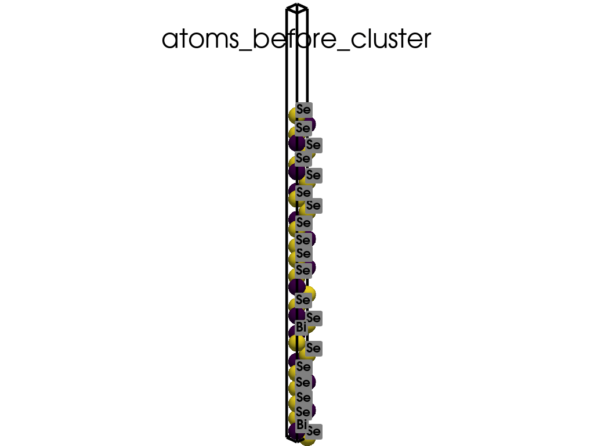
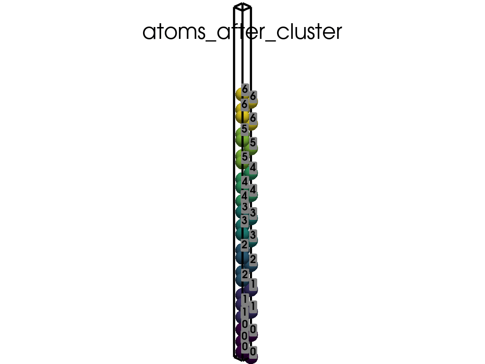

Note
Go to the end to download the full example code.
Visualizing Clusters in Bi2Se3 Slab#
In this example, we’ll explore the atomic clusters within a slab of Bi2Se3. The slab structure is formed by quintuple layers (QL) where each QL can be regarded as a cluster. We’ll:
Parse the POSCAR file to obtain atomic positions.
Identify and label the atomic clusters within the slab.
Visualize the atomic clusters using pyvista.
Let’s get started!
import os
from itertools import product
import pyprocar.pyposcar as p
import numpy as np
import pyvista as pv
from pyprocar.utils import ROOT
data_dir=os.path.join(ROOT,'data','examples','PyPoscar','05-clusters')
# You do not need this. This is to ensure an image is rendered off screen when generating exmaple gallery.
pv.OFF_SCREEN = True
Utility function for creating GIF visualizations#
def create_gif(atoms, labels, unit_cell,scalars, save_file):
plotter = pv.Plotter()
title = save_file.split(os.sep)[-1].split('.')[0]
plotter.add_title(title)
plotter.add_mesh(unit_cell.delaunay_3d().extract_feature_edges(), color='black', line_width=5, render_lines_as_tubes=True)
plotter.add_point_labels(points=atoms.points, labels=labels, show_points=False, always_visible=True)
plotter.add_mesh(atoms, scalars=scalars, point_size=30, render_points_as_spheres=True, show_scalar_bar=False)
path = plotter.generate_orbital_path(n_points=36)
plotter.open_gif(os.path.join(data_dir, save_file))
plotter.orbit_on_path(path, write_frames=True, viewup=[0, 0, 1], step=0.05)
plotter.close()
Parsing the POSCAR and Identifying Clusters#
print('Loading a slab of Bi2Se3')
a = p.poscar.Poscar(os.path.join(data_dir,"Bi2Se3.vasp"), verbose=False)
a.parse()
print('It structure is formed by the so-called Quintuple layers (QL).'
' Each QL can be regarded as a `cluster`')
print('The Quintuple layers are')
c = p.Clusters(a)
print(c.clusters)
clusters_mapping={}
for i,cluster in enumerate(c.clusters):
for i_atom in cluster:
clusters_mapping.update({i_atom:i})
clusters_array=np.array( [clusters_mapping[i] for i in range(len(a.elm)) ] )
Loading a slab of Bi2Se3
It structure is formed by the so-called Quintuple layers (QL). Each QL can be regarded as a `cluster`
The Quintuple layers are
[[0, 1, 2, 21, 22], [3, 4, 5, 23, 24], [6, 7, 8, 25, 26], [11, 9, 10, 27, 28], [13, 14, 12, 29, 30], [32, 16, 17, 15, 31], [33, 34, 19, 18, 20]]
Visualizing the Clusters#
# Convert positions to Cartesian coordinates for visualization
atoms_before = pv.PolyData(np.dot(a.dpos, a.lat))
atoms_before['atoms'] = a.elm
atoms_before['clusters'] = clusters_array
labels_before = [elm for elm, point in zip(a.elm, a.dpos)]
labels_after=clusters_array
# Define the unit cell using lattice vectors
unit_cell_comb = list(product([0, 1], repeat=3))
unit_cell = np.array([comb[0]*a.lat[0] + comb[1]*a.lat[1] + comb[2]*a.lat[2] for comb in unit_cell_comb])
unit_cell_before = pv.PolyData(unit_cell)
create_gif(atoms=atoms_before, labels=labels_before, unit_cell=unit_cell_before, scalars='atoms', save_file='atoms_before_cluster.gif')
create_gif(atoms=atoms_before, labels=labels_after, unit_cell=unit_cell_before, scalars='clusters', save_file='atoms_after_cluster.gif')
- 
- 
Total running time of the script: (0 minutes 7.684 seconds)